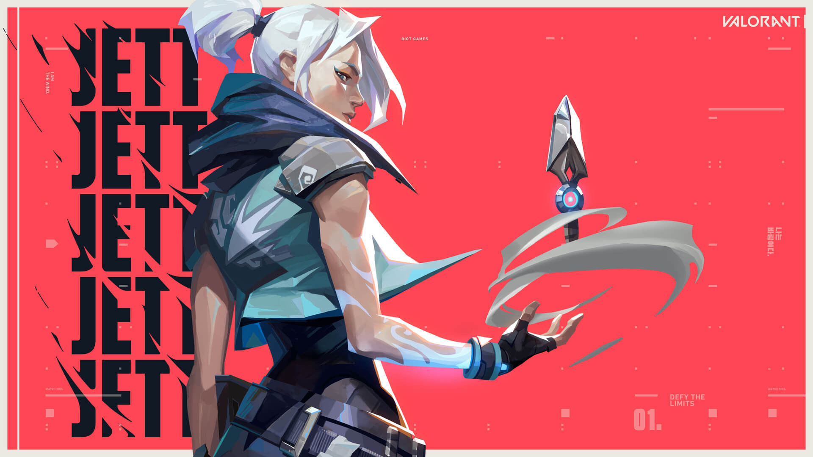
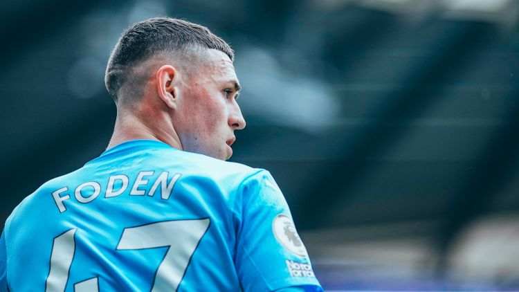
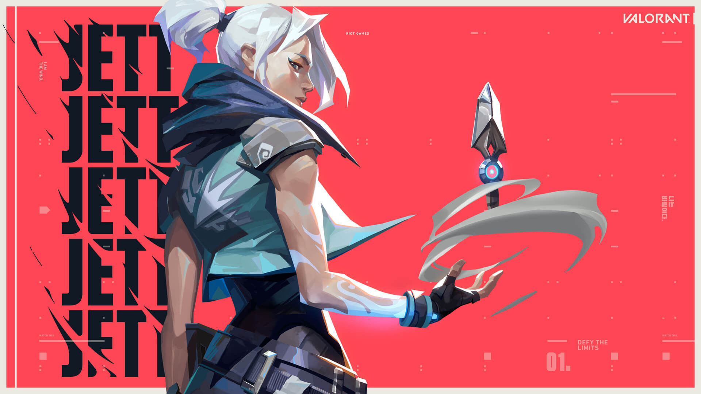
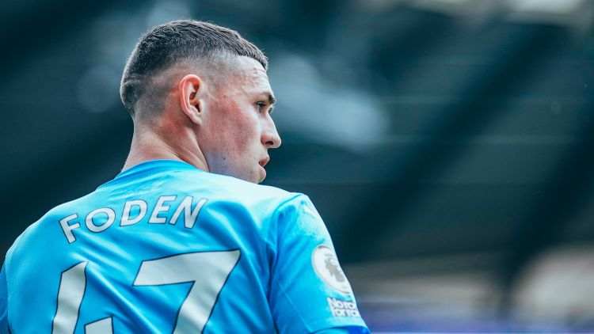

About me
 



Hi, I'm Duy Anh.
I was born in Da Lat City and am currently studying in Thu Duc City as an IT student at HCMIU.
In my free time, I usually play games and listen to music. Additionally, football is my favorite sport, and I support Manchester City in the English Premier League (EPL).